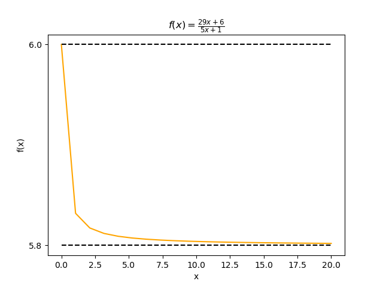
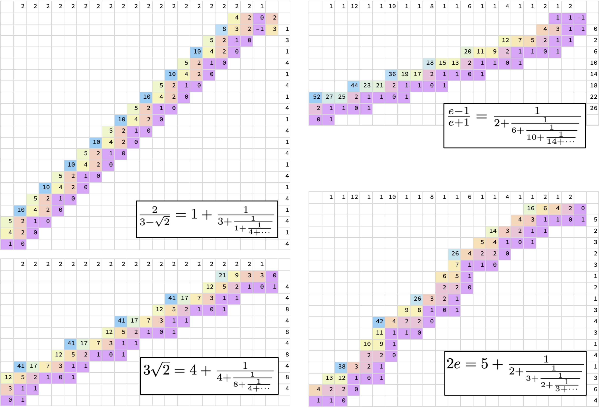
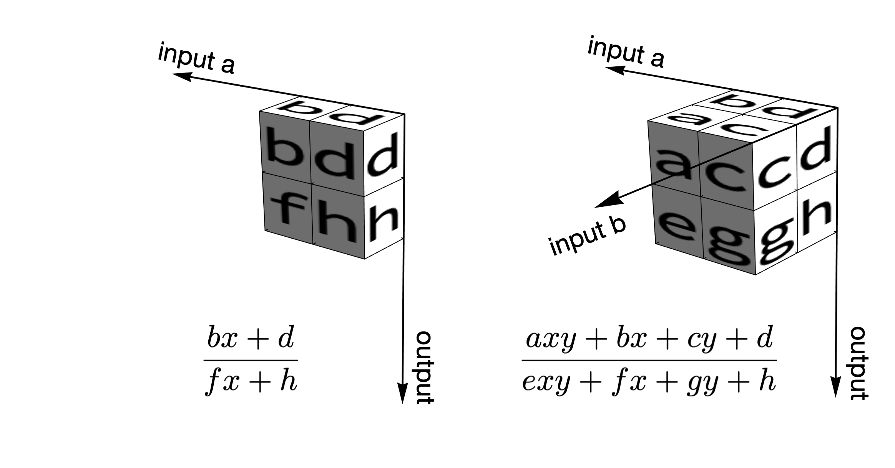
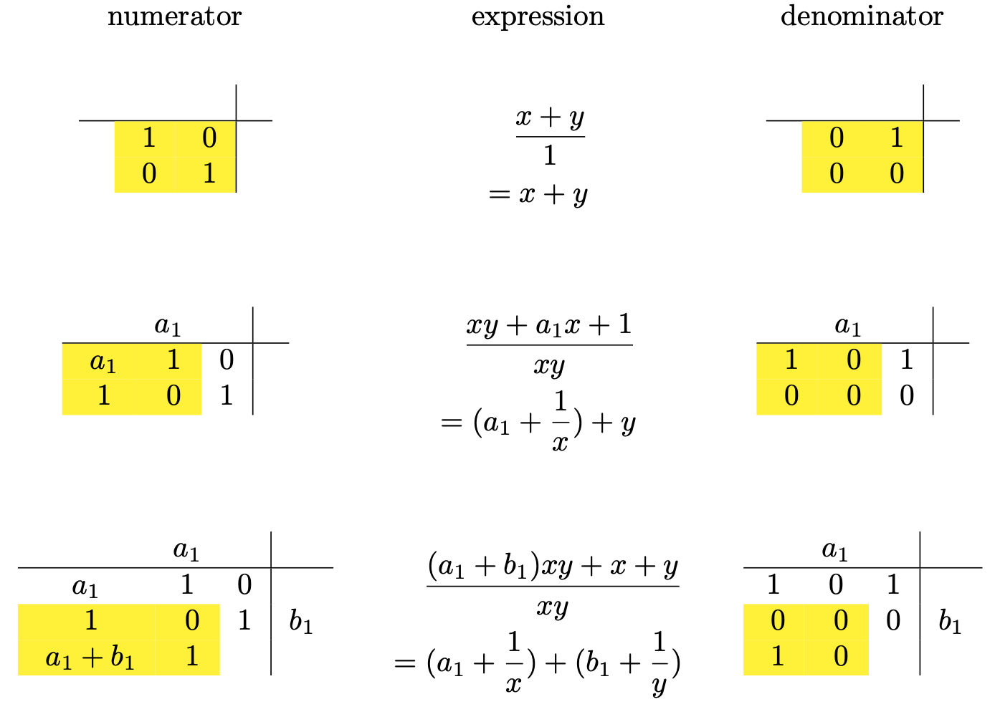
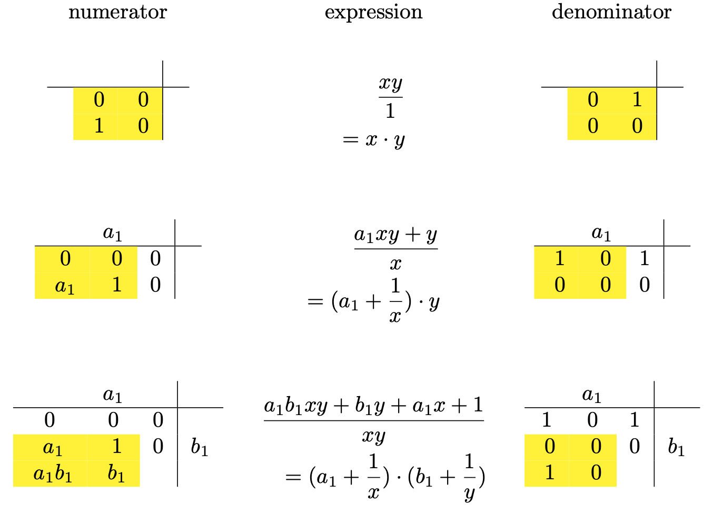
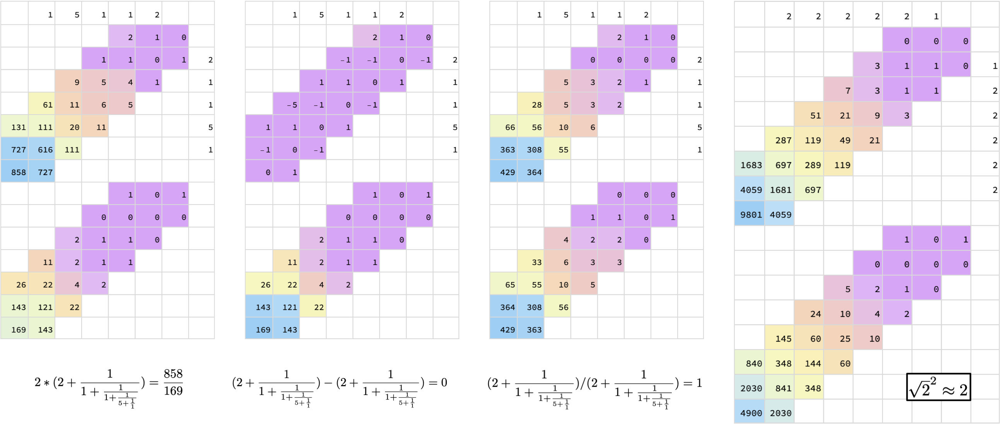
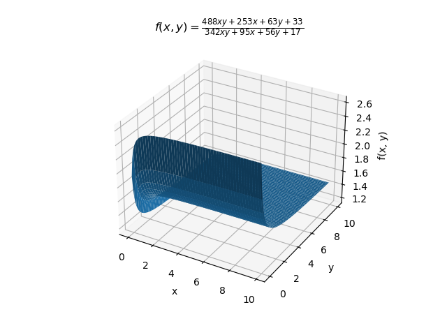
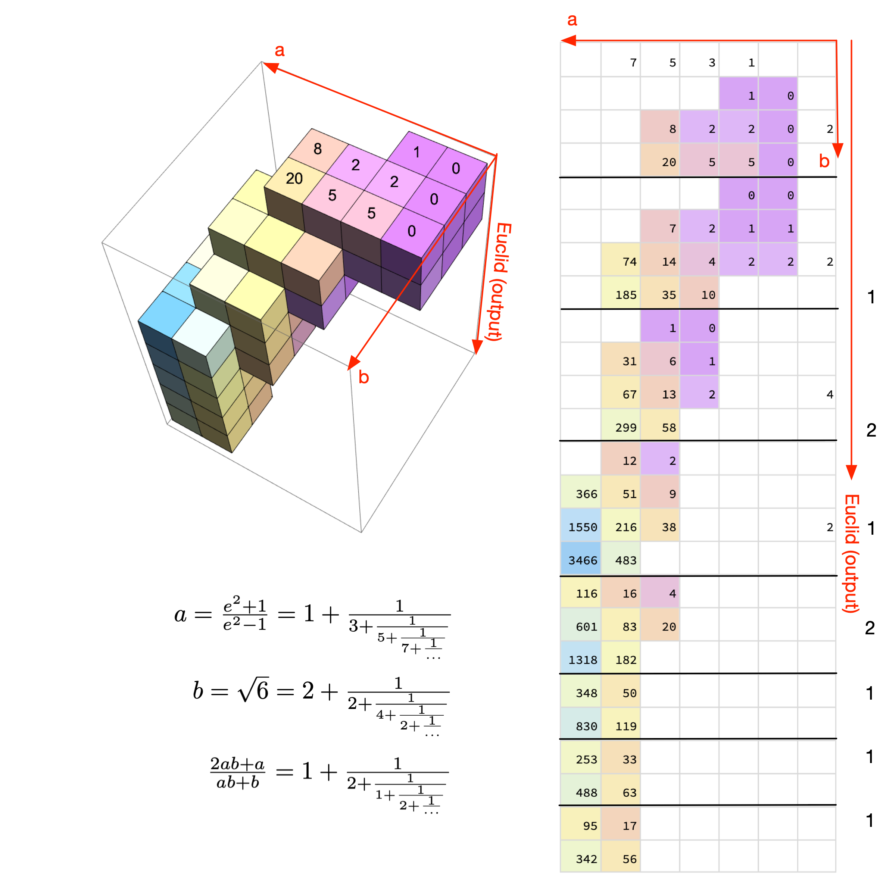
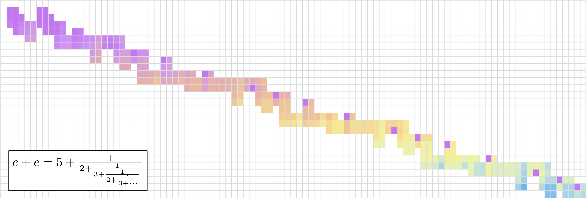

Understanding Bill Gospher's continued fraction arithmetic (implemented in Python)
Table of Contents
- 1. Introduction
- 2. Representing rational numbers as continued fractions
- 3. Calculating the convergents of a continued fraction
- 4. Continued fractions as recursive functions
- 5. Calculating convergents using matrices
- 6. Turning convergents into continued fractions using the Euclidean algorithm
- 7. Simple transformations of continued fractions
- 8. Arithmetic (Step 1): From matrices to tensors
- 9. Arithmetic (Step 2): Representing arithmetic operations
- 10. Arithmetic (Step 3): Calculating convergents using tensors
- 11. Arithmetic (Step 4): Applying the Euclidean algorithm to convergents
- 12. The final section with complex figures
- 13. Appendix: Quotients/remainders for matrices
- 14. Appendix: Quotients/remainders for tensors
- 15. Appendix: Unit tests
- 16. Appendix: Display utilities
- 17. Appendix: Imports and outlines
1 Introduction
Continued fractions are very often said to be the most natural or elegant way to represent numbers. Imagine a parallel universe, in which continued fractions are used as the dominant number system. People there use continued fractions for everything. So you'd think they calculate with them, too. But can you calculate with continued fractions? Most presentations on this subject don't talk about arithmetic at all. This gives the impression that you can't really do anything with them, except for looking for patterns in the coefficients when they are used to represent irrational numbers.
In fact, in 1972, mathematician and computer scientist Bill Gospher developed an ingenious method for doing exact arithmetic on continued fractions. Unfortunately, this method was published as an informal memo, which left out many details. I decided to implement the main idea in Python, and explain the reasoning in my own way. You can find Gospher original memo and additional information here. The source code is available here.
2 Representing rational numbers as continued fractions
Since we'll use rational numbers a lot, let's define a class:
class Rational(NamedTuple('Rational', [('a', int), ('b', int)])):
"""Rational(a, b) = a/b"""
def __repr__(self):
return f'{self.a}/{self.b}'
How to convert a rational number to a continued fraction? Observing that
\[ \frac{254}{100} = 2 + \frac{54}{100} = 2 + \frac{1}{\frac{100}{54}} = 2 + \frac{1}{1 + \frac{46}{54}} = 2 + \frac{1}{1 + \frac{1}{\frac{46}{54}}} \]
it should be obvious that the solution is just the Euclidean algorithm for finding the greatest common divider: we first decompose the numerator \(a\) as \(a=b*q+r\), where \(b\) is the denominator, \(q\) is an integer called the quotient, and \(r\) is the remainder. We output \(q\), and repeat the process, using \(b\) as the numerator and \(r\) as the denominator. We stop when the numerator becomes 0.
# Convert a rational number to a continued fraction
def qr(a: int, b: int) -> Tuple[int, int]:
"""
Find the quotient and remainder of a rational number.
a = b * q + r, return (q, r).
:param a: The numerator of the rational number
:param b: The denominator of the rational number
:return: (quotient, remainder)
"""
q = math.floor(a / b) # the quotient
r = a - b * q # the remainder
return (q, r)
def r2cf_(rn: Rational) -> Iterator[Tuple[int, int]]:
"""
Turn a rational number into a continued fraction.
The Euclidean algoirthm.
:param rn: The rational number
:return: An iterator of the old denominator and the quotient
"""
a, b = rn
while True:
q, r = qr(a, b)
yield b, q
if r == 0:
break
a, b = b, r
def r2cf(rn: Rational) -> Iterator[int]:
"""
Turn a rational number to a continued fraction.
:param rn: The rational number
:return: An iterator of integers
"""
def second(x: tuple):
return x[1]
return map(second, r2cf_(rn))
Now we can use r2cf to convert a rational number into a continued fraction. In this article, I use Python generators to represent continued fractions, because they can have infinite number of terms. However, in the specific case of r2cf, the generators returned always have finite numbers of terms, because the continued fractions associated with rational numbers always have finite numbers of terms. This is one of the fundamental properties of rational numbers.
nc = r2cf(Rational(254, 100)) print(list(nc))
[2, 1, 1, 5, 1, 3]
This means that \[ \frac{ 254 }{ 100 }= 2+\frac{1}{1+\frac{1}{1+\frac{1}{5+\frac{1}{1+\frac{1}{3}}}}} \]
We can display the process in a tabular format. For example:
print(r2cf_tab(Rational(254, 100)))
254 100 2 54 1 46 1 8 5 6 1 2 3 0
On the top, we begin with the rational number \(\frac{254}{100}\). The quotient 2, displayed on the side, is the first term of the continued fraction. The rational number now becomes \(\frac{100}{54}\), and we continue the process until we reach 0. As a side note, the penultimate numerator 2 is the greatest common divider for 254 and 100, according to the Euclidean algorithm.
Interestingly, the reciprocal of \(\frac{254}{100}\) (that is, \(\frac{100}{254}\)) is represented by the following as a continued fraction:
nc = r2cf(Rational(100, 254)) print(list(nc))
[0, 2, 1, 1, 5, 1, 3]
It's the same sequence with an additional 0 at the beginning! This is our first clue that a continued fraction can be transformed by performing some operations at the beginning of the Euclidean algorithm. We'll come back to this point later.
3 Calculating the convergents of a continued fraction
Given a continued fraction, how do we calculate its value? If the series is finite, we can easily write a recursive function. However, if it's an infinite series, we need a method to incrementally approximate the value as more terms are received. Also, we want the evaluation to be accumulative, so that each update is based on the previous one.
This question has an easy solution if we use a series of rational numbers to approximate the continued fraction. Each term in the series is called a convergent. The formula for the convergents can be derived easily with mathematical induction, and it is implemented below. For the moment, we'll use the formula just a convenience to get the job done. We'll get deeper into its meaning in the next section.
# Calculate the convergents of a continued fraction
def cf_convergents0(cf: Iterator[int]) -> Iterator[Rational]:
"""
Calculate the convergents of a continued fraction.
:param cf: A continued fraction
:return: An iterator of rational numbers
"""
p1, p0 = 1, 0
q1, q0 = 0, 1
for a in cf:
p = a * p1 + p0
q = a * q1 + q0
yield Rational(p, q)
p0, p1 = p1, p
q0, q1 = q1, q
For example, for the continued fraction \([2, 1, 1, 5, 1, 3]\), we get
print(list(cf_convergents0(iter([2, 1, 1, 5, 1, 3]))))
[2/1, 3/1, 5/2, 28/11, 33/13, 127/50]
In other words, \(2+\frac{1}{1+\frac{1}{1+\frac{1}{5+\frac{1}{1+\frac{1}{3}}}}}\) can be approximated with \(\frac{2}{1}\),\(\frac{3}{1}\),\(\frac{5}{2}\),\(\frac{28}{11}\),\(\frac{33}{13}\),\(\frac{127}{50}\) .
For convenience, we define a specialized version of cf_convergents0 just for finite-term continued fractions. It returns the rational number corresponding to the continued fraction:
def cf2r0(cf: Iterator[int]) -> Rational:
"""
The value of a finite-length continued fraction as a rational number.
This function will get into an infinite loop if the iterator doesn't stop.
"""
return list(cf_convergents0(cf))[-1]
print(cf2r0(iter([2, 1, 1, 5, 1, 3])))
127/50
Another example: the irrational number \(e\) can be expressed as a continued fraction by this code:
# Examples of continued fractions
def cf_e() -> Iterator[int]:
'''e as a continued fraction'''
yield 2
k = 0
while True:
# a finite generator comprehension
for i in (j for j in [1, 2 * k + 2, 1]):
yield i
k = k + 1
It has infinite number of terms, but the series follows a simple pattern. This is just the first 16 terms:
print(list(islice(cf_e(), 16)))
[2, 1, 2, 1, 1, 4, 1, 1, 6, 1, 1, 8, 1, 1, 10, 1]
Here are the convergents, as rational and as floating point numbers:
conv_ = cf_convergents0(cf_e())
conv = list(islice(conv_, 16)) # the first 16 convergents
for c in conv:
print(f'{repr(c):<20} {c[0]/c[1]:.8f}')
2/1 2.00000000 3/1 3.00000000 8/3 2.66666667 11/4 2.75000000 19/7 2.71428571 87/32 2.71875000 106/39 2.71794872 193/71 2.71830986 1264/465 2.71827957 1457/536 2.71828358 2721/1001 2.71828172 23225/8544 2.71828184 25946/9545 2.71828182 49171/18089 2.71828183 517656/190435 2.71828183 566827/208524 2.71828183
4 Continued fractions as recursive functions
Given the first 3 terms in a continued fraction \([5, 1, 4...]\), let \(x\) denote the reciprocal of the value of the remaining series. We can express the convergent as \(f_1(x)\), \(f_2(x)\), \(f_3(x)\)…, where
\begin{equation*} f_1(x) = 5 + \frac{1}{x} \end{equation*} \begin{equation*} f_2(x) = 5 + \frac{1}{1 + \frac{1}{x}} = f_1(1 + \frac{1}{x}) \end{equation*} \begin{equation*} f_3(x) = 5 + \frac{1}{1 + \frac{1}{4 + \frac{1}{x}}} = f_1(f_2(4 + \frac{1}{x})) \end{equation*}Or more compactly, let
\begin{equation*} h(a, x) = a + \frac{1}{x} \end{equation*}then
\begin{equation*} f_1(x) = h(5, x) \end{equation*} \begin{equation*} f_2(x) = h(5, h(1, x)) \end{equation*} \begin{equation*} f_3(x) = h(5, h(1, h(4, x))) \end{equation*}This way, we express the approximation as a recursive process. If the continued fraction stops at the third term, its value is \(h_3(\infty) = h(5, h(1, h(4, \infty)))\). Infinity might seem odd here, but remember that \(x\) is the reciprocal of the rest of the sequence. So it just means that the rest of the sequence evaluates to 0.
Before we rush to translate this into code, let's dig deeper. If we use column vectors to represent rational numbers:
\begin{equation*} \begin{bmatrix} p \\ q \end{bmatrix} = \frac{p}{q} \end{equation*}Then we can turn everything into linear algebra:
\begin{equation*} h(a, x) = a + \frac{1}{x} = \frac{ax + 1}{x} \end{equation*}can be written in our matrix notation as
\begin{equation*} \begin{bmatrix} ax + 1 \\ x \end{bmatrix} = \begin{bmatrix} a & 1 \\ 1 & 0 \end{bmatrix} \begin{bmatrix} x \\ 1 \end{bmatrix} \end{equation*}Furthermore,
\begin{equation*} f_3(x) = h(5, h(1, h(4, x))) \end{equation*}can be written as
\begin{equation*} \begin{bmatrix} 5 & 1 \\ 1 & 0 \end{bmatrix} \begin{bmatrix} 1 & 1 \\ 1 & 0 \end{bmatrix} \begin{bmatrix} 4 & 1 \\ 1 & 0 \end{bmatrix} \begin{bmatrix} x \\ 1 \end{bmatrix} = \begin{bmatrix} 29 & 6 \\ 5 & 1 \end{bmatrix} \begin{bmatrix} x \\ 1 \end{bmatrix} \end{equation*}So, the 2-by-2 matrix
\(\begin{bmatrix} 29 & 6 \\ 5 & 1 \end{bmatrix}\)
represents a function that approximates a continued fraction with more terms. If the continued fractions has only 3 terms, we terminate the process by evaluating
\begin{equation*} \begin{bmatrix} 29 & 6 \\ 5 & 1 \end{bmatrix} \begin{bmatrix} 1 \\ 0 \end{bmatrix} = \begin{bmatrix} 29 \\ 5 \end{bmatrix} = \frac{29}{5} \end{equation*}Multiplying the matrix with \(\begin{bmatrix} 1 \\ 0 \end{bmatrix}\) turns the function into a rational value, which is the first column of the matrix.
5 Calculating convergents using matrices
Now, we are ready to rewrite the formula in cf_convergents0 as matrix multiplications:
# Calculate the convergents using matrix multiplication
def h(a: int) -> np.ndarray:
'''Homographic matrix for one term of continued fraction'''
return np.array([[a, 1], [1,0]])
def cf_convergents1_(cf: Iterator[int]) -> Iterator[np.ndarray]:
"""
The convergents (as matrices) of a continued fraction.
:param cf: The continued fraction
:return: An iterator of 2x2 matrices representing the convergents
"""
res = np.array([[1, 0], [0, 1]])
for a in cf:
res = np.matmul(res, h(a))
yield res
def cf_convergents1(cf: Iterator[int]) -> Iterator[Rational]:
"""
The convergents (as rational numbers ) of a continued fraction
:param cf: The continued fraction
:return: An iterator of rational numbers
"""
mLst = cf_convergents1_(cf)
for m in mLst:
yield Rational(m[0, 0], m[1, 0])
Let's try it on an example that we used previously:
print(list(cf_convergents1(iter([2, 1, 1, 5, 1, 3]))))
[2/1, 3/1, 5/2, 28/11, 33/13, 127/50]
A very charming thing that Gosper did was that he used a compact tabulated format to illustrate the process. It's unnecessary for the computation, but I think it looks pretty cool:
print(cf_convergents1_tab(iter([5, 1, 4])))
4 1 5
29 6 5 1 0
5 1 1 0 1
This table is read from the right to the left. The right-to-left direction takes some getting used to, but it's needed to preserve the normal representation of matrices. The first row represents the terms of the continued fraction. What are the numbers below the first row? They are the matrices representing the convergents associated with \([5, 1, 4]\). To see why, we calculate the matrices for each additional term in the continued fraction:
itr = cf_convergents1_(iter([5, 1, 4])) print(next(itr),"\n") print(next(itr),"\n") print(next(itr))
[[5 1] [1 0]] [[6 5] [1 1]] [[29 6] [ 5 1]]
You can see these matrices shift leftwards in the tabular representation, with adjacent matrices sharing a column. Suppose that the current matrix is \(\begin{bmatrix} p & q \\ r & s \end{bmatrix}\), and we have to update it with a new term \(a_n\) in the continued fraction. The updated matrix is
\begin{equation*} \begin{bmatrix} p & q \\ r & s \end{bmatrix} \begin{bmatrix} a_n & 1 \\ 1 & 0 \end{bmatrix} = \begin{bmatrix} a_n p + q & p \\ a_n r + s & r \end{bmatrix} \end{equation*}
This explains the shift, and we have recovered the formula in cf_convergents0.
Finally, we define a specialized version of cf_convergents1 just for finite-term continued fractions.
def cf2r1(cf: Iterator[int]) -> Rational:
"""
Turn a continued fraction into a rational number.
The continued fraction must have finite length.
If not, this function will get into an infinite loop.
:param cf: The continued fraction
:return: A rational number
"""
return list(cf_convergents1(cf))[-1]
6 Turning convergents into continued fractions using the Euclidean algorithm
In this section, we'll calculate convergents as in cf_convergent1, but as it happens, we'll also turn them into continued fractions. This seems to be a pointless exercise, because a continued fraction is what we start with! Indeed, at the end of this section, we'll see that our code receives a continued fraction, and just returns the same series. However, in the next section, it will be used to do interesting things.
Let's take the continued fraction \([5, 1, 4... ]\) as an example. Since we already know from the last section that the third convergent of \([5, 1, 4]\) is \(\frac{29}{5}\), can't we just turn \(\frac{29}{5}\) into a continued fraction, using the r2cf function that we have already written? It is not as simple as that, because \([5, 1, 4]\) and \([5, 1, 4...]\) are not the same. For the former, the third convergent is just a rational number. However, for the latter, the third convergent
\(\begin{bmatrix}
29 & 6 \\
5 & 1
\end{bmatrix}\) represents the function \(\frac{29x + 6}{5x + 1}\). To turn it into a continued fraction, we'll need to take the rest of the series, represented by \(x\), into account.
How? The answer is still the Euclidean algorithm, but we have to use it symbolically rather than numerically.
The first step is to symbolically represent the function as a quotient and a remainder. I implemented this operation in qr_matrix in the Appendix. We can use it on the third convergent:
pp_qr(qr_matrix(np.array([[29, 6], [5, 1]])))
5 5 1 4 1
This means that \(f_3(x) = \frac{29x+6}{5x+1} = 5 + \frac{1}{\frac{5x+1}{4x+1}}\). Why is the quotient 5? Since \(\lim_{x \to 0} f_3(x) = 6\) and \(\lim_{x \to \infty} f_3(x) = \frac{29}{5} = 5.8\), the function is bounded by \(5.8 < f_3(x) < 6\) (note that \(0 < x < \infty\)). The quotient therefore has to be 5.

Now, we are ready to implement the symbolic form of the Euclidean algorithm by calling qr_matrix repeatedly:
def euclid_matrix_(m: np.ndarray) -> Iterator[Tuple[int, np.ndarray]]:
"""
Symbolic Euclidean algorithm for a homographic function.
:param m: The 2x2 matrix representing the function.
:return: An iterator of the quotient and the remainder.
"""
while True:
if m[0][0] == 0 and [0][1] == 0:
# if there is no remain, stop
break
else:
(q, r) = qr_matrix(m)
if q is not None:
yield q, r
m = r
else:
# if the quotient cannot be determined, stop
break
Let's try it on \(\begin{bmatrix} 70 & 29 \\ 12 & 5 \end{bmatrix}\)
q = euclid_matrix_(np.array([[70, 29], [12, 5]]))
for (r, m) in q:
pp_qr((r, m))
print()
5 12 5 10 4 1 10 4 2 1 4 2 1 2 0
So there is enough information in \(\frac{70x+29}{12x+5}\) to precisely determine 3 terms (5, 1, 4). The last matrix represents \(\frac{2x+1}{2x}\), an unbounded function. This means that depending on the next term of the input, the function can evaluate to any value. We don't have enough information to determine the quotient, so we have to stop.
As before, Gospher stacked the matrices in a compact format to illustrate the process:
print(euclid_matrix_tab(np.array([[70, 29], [12, 5]])))
70 29 12 5 5 10 4 1 2 1 4 2 0
This is a just an extension of the format that we use to visualize r2cf: we start with \(\begin{bmatrix} 70 & 29 \\ 12 & 5\end{bmatrix}\), end with \(\begin{bmatrix}2 & 1 \\ 2 & 0\end{bmatrix}\), and output 5, 1, 4 in the process.
Now, we can combine convergent calculation with the symbolic Euclidean algorithm. The first function below cf_transform_ returns the desired information (the quotient) along with internal states of the algorithm. It's useful for debugging and visualization. We use a second function cf_transform to filter out the internal states:
def cf_transform_(cf: Iterator[int], m0: np.ndarray = np.identity(2, int), finite_term = True) -> Iterator[Tuple[Optional[int], Optional[np.ndarray], np.ndarray, int, bool]]:
"""
Transform a continued fraction.
Exposes the internal states of the algorithm for visualization.
A step can do: 1. Update the homographic matrix
2. Update, and an Euclidean step
3. Only an Euclidean step
:param cf: The continued fraction.
:param m0: The initial 2x2 matrix representing the transformatiom.
:param finite-term: True, if cf is a continued fraction with finite terms.
False, if cf represents a truncated continued fraction.
:return: q: The quotient. None if the Euclidean step cannot be performed.
r: The remainder. None if the Euclidean step cannot be performed.
m: The 2x2 matrix before the Euclidean step
a: The term of the continued fraction that was used in this update
new_a: Was a new a term used?
False if this step only did Euclidean
"""
m = m0
for a in cf:
m = np.matmul(m, h(a))
new_a = True
for (q, r) in euclid_matrix_(m):
yield q, r, m, a, new_a
new_a = False
m = r
if new_a:
# Nothing was yielded.
# This convergent cannot be turned into a continued fraction
yield (None, None, m, a, new_a)
# We will only reach this point if the series is finite
if finite_term and m[1][0] != 0:
for s in r2cf(Rational(m[0][0], m[1][0])):
yield s, None, m, a, False
def cf_transform(cf: Iterator[int], m0: np.ndarray = np.identity(2, int), finite_term = True) -> Iterator[int]:
"""
Transform the input continued fraction into a new continued fraction.
:param cf: The continued fraction.
:param m0: The 2x2 matrix representing the transformation.
:param finite_term: Is cf a finite-term fraction?
Set to false if cf is a finite truncation of
an infinite continued fractuon
:return: A new continued fraction
"""
for res in cf_transform_(cf, m0, finite_term):
(q, r, m, a, new_a) = res
if q is not None:
yield q
else:
# q can be None, indicating that more terms are needed
# to continue. It can be ignored
pass
Run it on a continued fraction, and it just returns the same sequence. It doesn't seem to do any transformation. We'll see why the function is called cf_transform in the next section.
print(list(cf_transform(iter([2, 1, 1, 5, 1, 3]))))
[2, 1, 1, 5, 1, 3]
This seems to be anti-climatic for quite a bit of work… but here's something cool. Gospher combined the two stacked matrix representations that we have seen, to illustrate every step in the algorithm:
print(cf_transform_tab(iter([2, 1, 1, 5, 1, 3])))
3 1 5 1 1 2
3 2 1 0
2 1 1 0 1 2
6 1 1 0 1
6 5 1 0 1
4 1 1 0 5
3 1 0 1
1 0 3
The numbers on the right are the outputs of cf_transform.
7 Simple transformations of continued fractions
The beauty of the matrix representation is that we can transform convergents with a function of the form \(f(x) = \frac{px+q}{rx+s}\). All we need is an additional matrix multiplication on the left side! This can be calculated by giving cf_transform an initial matrix.
The continued fraction \([2, 1, 1, 5, 1]\) is \(\frac{33}{13}\). Let's double that, and turn it back to a continued fraction:
print("[2, 1, 1, 5, 1] is ", cf2r1(iter([2, 1, 1, 5, 1])))
print("The continued fraction of 66/13 is ", list(r2cf(Rational(66, 13))), "\n")
print(r2cf_tab(Rational(66, 13)))
[2, 1, 1, 5, 1] is 33/13
The continued fraction of 66/13 is [5, 13]
66
13 5
1 13
0
According to the above, \(2 * [2, 1, 1, 5, 1]\) is \([5, 13]\). How do we end up with fewer terms? We can illustrate the process by running cf_transform_tab with the initial matrix \(\begin{bmatrix} 2 & 0 \\ 0 & 1 \end{bmatrix}\) (which stands for the function \(f(x) = 2x\)):
m0 = np.array([[2, 0], [0, 1]], int)
cf = cf_transform(iter([2, 1, 1, 5, 1]), m0 = m0)
print(" 2 * [2, 1, 1, 5, 1] is ", list(cf), "\n")
print(cf_transform_tab(iter([2, 1, 1, 5, 1]), m0 = m0))
2 * [2, 1, 1, 5, 1] is [5, 13]
1 5 1 1 2
10 6 4 2 0
13 11 2 1 1 0 1 5
1 1 0 1 13
Take one of the matrices in the tabulated display \(\begin{bmatrix} 6 & 4 \\ 1 & 1\end{bmatrix}\) for example. The range of \(\frac{6x+4}{x+1}\) is too wide (between 4 and 6) for the quotient to be determined. The algorithm therefore needs another term of the continued fraction. The matrix shifts leftwards without outputting a quotient. That's why the transformed continued fraction has a smaller number of terms.
Previously, we saw that the reciprocal of a continued fraction has an addition 0 in the beginning. Let's verify that with the initial matrix \(\begin{bmatrix} 0 & 1 \\ 1 & 0 \end{bmatrix}\) (which stands for the function \(f(x) = \frac{1}{x}\)):
m0 = np.array([[0, 1], [1, 0]], int)
cf = cf_transform(iter([2, 1, 1, 5, 1]), m0 = m0)
print("The reciprocal of [2, 1, 1, 5, 1] is ", list(cf), "\n")
print(cf_transform_tab(iter([2, 1, 1, 5, 1]), m0 = m0))
The reciprocal of [2, 1, 1, 5, 1] is [0, 2, 1, 1, 5, 1]
1 5 1 1 2
1 0 1
3 2 1 0 0
2 1 1 0 2
6 1 1 0 1
6 5 1 0 1
1 1 0 5
1 0 1
Another example: what is \(\frac{2}{3-\sqrt{2}}\) as a continued fraction? First, \(\sqrt{2} = [1, 2, 2, 2...]\), so we should define an infinite generator:
def cf_sqrt2():
"""A generator representing sqrt(2) as a continued fraction"""
yield 1
while True:
yield 2
Then, we just need to run cf_transform with \(\begin{bmatrix} 0 & 2 \\ -1 & 3 \end{bmatrix}\) (which stands for \(\frac{2}{-x + 3}\)):
m0 = np.array([[0, 2], [-1, 3]], int)
cf = islice(cf_transform(cf_sqrt2(), m0 = m0), 6)
print(" 2 / (3 - sqrt(2)) is ", pp_inf_cf(list(cf)), "\n")
print(cf_transform_tab(islice(cf_sqrt2(), 6), m0 = m0))
2 / (3 - sqrt(2)) is [1,3,1,4,1,4...]
2 2 2 2 2 1
4 2 0 2
8 3 2 -1 3 1
5 2 1 0 3
10 4 2 0 1
5 2 1 0 4
4 2 0 1
1 0 4
The answer is a periodic continued fraction \([1, 3, 1, 4, 1, 4...]\).
Another example: what is \(\tanh{\frac{1}{2}} = \frac{e-1}{e+1}\)? We have already defined the continued fraction for \(e\), so it's just a matter of choosing the right initial matrix (\(\begin{bmatrix} 1 & -1 \\ 1 & 1 \end{bmatrix}\), representing \(\frac{x-1}{x+1}\)):
m0 = np.array([[1, -1], [1, 1]], int)
cf = islice(cf_transform(cf_e(), m0 = m0), 6)
print("(e-1)/(e+1) is ", pp_inf_cf(list(cf)), "\n")
print(cf_transform_tab(islice(cf_e(), 12), m0 = m0))
(e-1)/(e+1) is [0,2,6,10,14,18...]
8 1 1 6 1 1 4 1 1 2 1 2
1 1 -1
4 3 1 1 0
12 7 5 2 1 1 2
20 11 9 2 1 1 0 1 6
28 15 13 2 1 1 0 1 10
17 2 1 1 0 1 14
1 0 1 17
The answer is a continued fraction with a simple pattern: after the second term, add 4 to the previous term.
I find the tabulated displays visually appealing, so I wrote some external codes (in Mathematica) to give them some colors. The colors make it easier to see the patterns in the numbers.

Before we proceed further, there is a small but important point that should be clarified. In the last example, we transformed \(e\) to calculate \(\frac{e-1}{e+1}\). It was done by truncating \(e\)'s infinite number of terms, retaining only the first 6 terms. This might give the impression that cf_transform is for approximating \(\frac{e-1}{e+1}\). That is not the case. The entire point of Gospher's work is to show that exact continued fraction arithmetic is possible. If this is not clear to you, let's define a different interface to cf_transform_, to make the point more obvious.
def cf_transform_func(cf: Iterator[int], m0: np.ndarray) -> Tuple[List[int], np.ndarray]:
"""
Transform a continued continuation with finite number of terms.
Returns a list (representing the transformed fraction) and the
last homographic function so that it can be used on more terms.
If cf is infinite, this function won't terminate.
:param cf: The input continuned fraction.
:param m0: A 2x2 matrix representing the transformation
:return: A list representing the transformed fraction, and
a 2x2 matrix representing the homographic function
"""
outputs: List[int] = []
out_m: Optional[np.ndarray] = None
for res in cf_transform_(cf, m0, finite_term = False):
(q, r, m, a, new_a) = res
if q is not None:
outputs = outputs + [q]
out_m = r
else:
out_m = m
assert isinstance(out_m, np.ndarray)
return outputs, out_m
I call this function cf_transform_func, to emphasize that the output is a list integers, and a function represented by a matrix. The list of integers is an approximation, but together with the function, we have the exact solution to the computation. Why is it exact? Because if we have more terms of \(e\), we can send it to the function to get more output terms. This is a recursive process that can continue forever.
The example below, we call cf_transform_func with the first 6 terms of \(e\). We get 3 terms (0, 2, 6), and the function \(f(x) = \frac{9x + 2}{x}\), represented by the matrix. We can get 6 more terms of \(e\), and call cf_transform_func again with the matrix to continue the process.
m0 = np.array([[1, -1], [1, 1]], int)
cf = cf_e()
cf6 = islice(cf, 6)
(outs, m) = cf_transform_func(cf6, m0 = m0)
print("Using the first 6 terms of e, (e-1)/(e+1) is ", outs)
print("The homomorphic function is:\n ", m)
# take 6 more terms from e
cf6 = islice(cf, 6)
# we can continue our calculations to get more terms
(outs, m) = cf_transform_func(cf6, m0 = m)
print("With 6 more terms of e, we get ", outs)
Using the first 6 terms of e, (e-1)/(e+1) is [0, 2, 6] The homomorphic function is: [[9 2] [1 0]] With 6 more terms of e, we get [10, 14]
8 Arithmetic (Step 1): From matrices to tensors
We have been dealing with one continued fraction at a time. In those situations, all operations involve functions of the form \(f(x) = \frac{px+q}{rx+s}\). They are known as homographic functions, and they can be represented by the matrix \(\begin{bmatrix} p & q \\ r & s \end{bmatrix}\). How do we generalize it to operations involving two continued fractions?
The problem is solved with bihomographic functions of the form \(f(x, y) = \frac{axy + bx + cy + d}{exy + fx + gy + h}\), where \(x\) and \(y\) are the unknown terms for the two continued fractions \(a\) and \(b\) respectively. We can write it in matrix form as:
\begin{equation*} f(x, y) = \begin{bmatrix} 1 & y \end{bmatrix} \begin{bmatrix} b & d \\ a & c \end{bmatrix} \begin{bmatrix} x \\ 1 \end{bmatrix} \bigg/ \begin{bmatrix} 1 & y \end{bmatrix} \begin{bmatrix} f & h \\ e & g \end{bmatrix} \begin{bmatrix} x \\ 1 \end{bmatrix} \end{equation*}Since we are working with two matrices as a single entity, it's natural to use tensors to represent bihomographic functions:
# Tensor representations of bihomographic functions
def tFrom2x4(m: np.ndarray) -> np.ndarray:
"""
Translate a bihomographic function from algebraic to tensor form.
:param m: A 2x4 matrix representing the function
:return: A 2x2x2 tensor
"""
((a, b, c, d), (e, f, g, h)) = m.tolist()
return np.array([[[b, d], [a, c]], [[f, h], [e, g]]])
def tTo2x4(m: np.ndarray) -> np.ndarray:
"""
Translate a bihomographic function from tensor to algebraic form.
:param m: A 2x2x2 tensor
:return: A 2x4 matrix
"""
(((b, d), (a, c)), ((f, h), (e, g))) = m.tolist()
return np.array([[a, b, c, d], [e, f, g, h]])
I need a utility function to make it easy to access so many numbers in the tensors:
def tensor_ref(t: np.ndarray, label: str) -> Union[int, Tuple[int, int]]:
"""
Easy accessing elements of a tensor
:param t: A 2x2x2 tensor
:param label: a-h refers to a number in the tensor
xy, x, y, 1 refers to numerator/denominator pairs
:return: A number, or a pair of numbers
"""
assert t.shape == (2, 2, 2)
assert label in ['a', 'b', 'c', 'd', 'e', 'f', 'g', 'h', 'xy', 'x', 'y', '1']
lookup = {}
lookup['a'] = t[0,1,0]
lookup['b'] = t[0,0,0]
lookup['c'] = t[0,1,1]
lookup['d'] = t[0,0,1]
lookup['e'] = t[1,1,0]
lookup['f'] = t[1,0,0]
lookup['g'] = t[1,1,1]
lookup['h'] = t[1,0,1]
lookup['xy'] = lookup['a'], lookup['e']
lookup['x'] = lookup['b'], lookup['f']
lookup['y'] = lookup['c'], lookup['g']
lookup['1'] = lookup['d'], lookup['h']
return lookup[label]
What happens to \(f(x, y)\), with the addition of a new term \(a_n\) of \(a\)?
\begin{equation*} f(a_n + \frac{1}{x}, y) = \begin{bmatrix} 1 & y \end{bmatrix} \begin{bmatrix} a_n b + d & b \\ a_n a + c & a \end{bmatrix} \begin{bmatrix} x \\ 1 \end{bmatrix} \bigg / \begin{bmatrix} 1 & y \end{bmatrix} \begin{bmatrix} a_n f + h & f \\ a_n e + g & e \end{bmatrix} \begin{bmatrix} x \\ 1 \end{bmatrix} \end{equation*}This is familiar, isn't it? It's exactly the same update rule that we use for updating the convergents! All we need to do is to right-multiply \(\begin{bmatrix} a_n & 1 \\ 1 & 0\end{bmatrix}\) the two matrices.
We can do the same with a new term \(b_n\) for \(b\):
\begin{equation*} f(x, b_n + \frac{1}{y}) = \begin{bmatrix} 1 & y \end{bmatrix} \begin{bmatrix} a & c \\ b_n a + b & b_n c + d \end{bmatrix} \begin{bmatrix} x \\ 1 \end{bmatrix} \bigg / \begin{bmatrix} 1 & y \end{bmatrix} \begin{bmatrix} e & g \\ b_n e + f & b_n g + h \end{bmatrix} \begin{bmatrix} x \\ 1 \end{bmatrix} \end{equation*}This is basically the same thing, except that the direction is different. This corresponds to left-multiplying \(\begin{bmatrix} 0 & 1 \\ 1 & b_n\end{bmatrix}\).
The above suggests an elegant way to visualize continued fraction arithmetic: if we imagine that two matrices form a 2x2x2 cube, this cube moves leftwards upon receiving a new term of \(a\), and it moves downwards upon receiving a new term of \(b\). As before, we'll also use the Euclidean algorithm to convert the bihomographic function into continued fractions. When we get to perform the Euclidean step, the 2x2x2 cube moves in the third dimension. The following figure illustrates that continued fraction arithmetic is a direct generalization of the 2D case:

To implement the cube movements in Python, I use my favorite Numpy function: einsum (Einstein's sum; see this tutorial). If the very compact notation (invented by Einstein) seems cryptic, don't worry. It's just repeated matrix multiplication.
def apply_a(t: np.ndarray, a: int) -> np.ndarray:
'''Move tensor t to the left by taking a new term of a'''
ha = h(a)
return np.einsum('dyx,xz->dyz', t, ha)
def h_rotated(b: int) -> np.ndarray:
'''A rotated version of the 2x2 homgraphic matrix'''
return np.array([[0, 1], [1, b]])
def apply_b(t: np.ndarray, b: int) -> np.ndarray:
'''Move tensor t downwards by taking a new term of b'''
hb = h_rotated(b)
return np.einsum('zy,dyx->dzx', hb, t)
def apply_ab(t: np.ndarray, term: int, label: str) -> np.ndarray:
"""
Apply a new term to the bihomographic tensor
:param t: The tensor
:param term: The new term to be applied to the tensor
:param label: Is the term from continued fraction a or b?
:return: A new 2x2x2 tensor
"""
assert label in ['a', 'b']
if label == 'a':
return apply_a(t, term)
else:
return apply_b(t, term)
9 Arithmetic (Step 2): Representing arithmetic operations
Something is curious about the discussion so far. We have a generic method for ingesting terms of two continued fractions, but how do we actually perform a specific operation on them? It's not hard to see that it all depends on the initial matrices. With appropriately chosen initial matrices, we can do multiplication, addition, division, subtraction, and their combinations. I think it's quite a remarkable result, because when we are dealing with numbers with multiple terms, multiplication is usually harder than addition. With continued fraction, the computational steps are exactly the same!
I made the following two figures to explain how addition and multiplication are done. Here's \(a+b\). We begin with just the initial matrices (first row), add the first term of \(a\), and then add the first term of \(b\).

Here's the same process for multiplication:

These are the initial tensors for the four basic operations:
# Initial tensors for basic arithemtic operations tForAddition = np.array([[[1, 0], [0, 1]], [[0, 1], [0, 0]]]) tForSubtraction = np.array([[[1, 0], [0, -1]], [[0, 1], [0, 0]]]) tForMultiplication = np.array([[[0, 0], [1, 0]], [[0, 1], [0, 0]]]) tForDivision = np.array([[[1, 0], [0, 0]], [[0, 0], [0, 1]]])
To make sure that the addition matrix works:
t = tForAddition t = apply_ab(t, 2, 'a') t = apply_ab(t, 3, 'b') t = apply_ab(t, 4, 'a') t = apply_ab(t, 5, 'b') print(tTo2x4(t))
[[109 21 26 5] [ 20 4 5 1]]
\(\begin{bmatrix} 109 & 21 & 26 & 5 \\ 20 & 4 & 5 & 1 \end{bmatrix}\) means \(\frac{109xy + 21x + 26y + 5}{20xy + 4x + 5y + 1}\), which equals \((2+\frac{1}{4+\frac{1}{x}}) + (3+\frac{1}{5+\frac{1}{y}})\). That's correct.
Let's try multiplication:
t = tForMultiplication t = apply_ab(t, 2, 'a') t = apply_ab(t, 3, 'b') t = apply_ab(t, 4, 'a') print(tTo2x4(t))
[[27 9 6 2] [ 4 0 1 0]]
\(\frac{27xy+9x+6y+2}{4xy+y} = (2 + \frac{1}{4+\frac{1}{x}}) \cdot (3+\frac{1}{y})\). That's also correct.
10 Arithmetic (Step 3): Calculating convergents using tensors
By updating the bihomographic function with new terms of \(a\) and \(b\), we can generate a series of rational numbers that converges to the result. The following code does this by applying a new term of \(a\), and then a new term of \(b\)… and so on. This is not the only way to update the tensors. Any process that applies the terms in sequence will work. You can, for example, update with two terms of \(a\), and then two terms of \(b\).
# Continued fraction arithmethic - convergents
def arithmetic_convergents_(a: Iterator[int], b: Iterator[int], t0 = tForAddition) -> Iterator[Tuple[str, int, np.ndarray]]:
"""
The convergents of doing arithemtic on two continued fractions.
This version exposes the internal steps for visualization and debugging.
New terms of the two continued fractions are applied alternately
:param a: The first continued fraction.
:param b: The second continued fraction.
:param t0: The 2x2x2 tensor representing the operation.
:return: The source (a or b?), the term, and the result (a 2x2x2 tensor)
"""
res = t0.copy()
while True:
an = next(a, None)
bn = next(b, None)
if an is None and bn is None:
break
if an is not None:
res = apply_ab(res, an, 'a')
yield 'a', an, res
if bn is not None:
res = apply_ab(res, bn, 'b')
yield 'b', bn, res
def arithmetic_convergents(a: Iterator[int], b: Iterator[int], t0 = tForAddition) -> Iterator[Rational]:
"""
The convergents of doing arithmetic on two continued fraction.
This version returns an iteartor of rational numbers.
:param a: The first continued fraction.
:param b: The second continued fraction.
:param t0: The 2x2x2 tensor representing the operation.
:return: An iterator of rational numbers
"""
c = arithmetic_convergents_(a, b, t0)
for _, _, res in c:
r = tensor_ref(res, 'xy')
assert isinstance(r, tuple)
yield Rational(r[0], r[1])
We have calculated previously that \(2*[2, 1, 1, 5, 1] = \frac{66}{13}\). Let's verify it by adding the continued fraction to itself:
a = iter([2, 1, 1, 5, 1]) b = iter([2, 1, 1, 5, 1]) print(list(arithmetic_convergents(a, b, tForAddition)))
[1/0, 4/1, 5/1, 6/1, 11/2, 20/4, 111/22, 616/121, 727/143, 858/169]
Yup. \(\frac{858}{169}\) equals to \(\frac{66}{13}\).
Let's try subtraction. Observe that \([2, 1, 1, 5, 1] - [2, 1, 1, 5, 1]\) does become 0 (that is \(\frac{0}{169}\)):
a = iter([2, 1, 1, 5, 1]) b = iter([2, 1, 1, 5, 1]) print(list(arithmetic_convergents(a, b, tForSubtraction)), "\n")
[-1/0, 0/1, 1/1, 0/1, -1/2, 0/4, 1/22, 0/121, -1/143, 0/169]
Note that the numerator oscillates between -1, 0, and 1, while the denominator gets larger and larger.
How about division? Yup. \(\frac{429}{429}=1\).
a = iter([2, 1, 1, 5, 1]) b = iter([2, 1, 1, 5, 1]) print(list(arithmetic_convergents(a, b, tForDivision)), "\n")
[0/1, 2/2, 3/2, 3/3, 5/6, 10/10, 56/55, 308/308, 363/364, 429/429]
Finally, let's try \(\sqrt{2}*\sqrt{2}\). With infinite number of terms, the answer should be 2. With finite number of terms, however, we get an approximation of 2 (\(\frac{9801}{4900}=2.0002\)).
a = islice(cf_sqrt2(), 6) b = islice(cf_sqrt2(), 6) print(list(arithmetic_convergents(a, b, tForMultiplication)), "\n")
[1/0, 1/1, 3/2, 9/4, 21/10, 49/25, 119/60, 289/144, 697/348, 1681/841, 4059/2030, 9801/4900]
Now we've come to visualization. Again, Gospher developed an ingenious method for visualizing the computational process, representing 2x2x2 tensors with a pseudo-3D effect. I decided not to implement his method because I find it hard to read. Instead, I will display the numerator and the denominator matrices separately. This format is not as compact as Gospher's method, but it works better when the numbers get large. In the figure below, the upper "band" is the evolution of the numerator matrix, and the lower band does the same for the denominator matrix. Note that for a 2x2 matrix in either band, you should read off the number in the lower-left corner, because \(\lim_{\substack{x\to \infty \\ y\to \infty}} \frac{axy + bx + cy + d}{exy + fx + gy + h} = \frac{a}{e}\).
a = iter([2, 1, 1, 5, 1]) b = iter([2, 1, 1, 5, 1]) print(arithmetic_convergents_tab(a, b, tForAddition))
1 5 1 1 2
2 1 0
1 1 0 1 2
9 5 4 1 1
61 11 6 5 1
131 111 20 11 5
727 616 111 1
858 727
1 0 1
0 0 0 0
2 1 1 0
11 2 1 1
26 22 4 2
143 121 22
169 143
The result \(\frac{858}{168}\) comes from the numbers at the lower-left corners of the two bands. Note that the row on top and the column on the right represent the two continued fractions.
Finally, some colors:

Unfortunately, I think these displays are not very satisfying, because the numbers tend to grow monotonically. That's because we haven't performed any Euclidean step. That's for the next section.
11 Arithmetic (Step 4): Applying the Euclidean algorithm to convergents
Since our tensors are just representations of bihomographic functions, it's straightforward to apply the Euclidean algorithm symbolically on them. euclid_tensor_ is almost identical to euclid_matrix_ in code structure:
# Continued fraction arithmetic - full version with Euclidean steps
def euclid_tensor_(t: np.ndarray) -> Iterator[Tuple[int, np.ndarray]]:
"""
Symbolic Euclidean step for tensor t
:param t: The 2x2x2 tensor
:return: An iterator of quotient (an int) and remainder (a tensor)
"""
while True:
if np.all(t[0]==0):
# if the numerator is all zero, stop
break
else:
(q, r) = qr_tensor(t)
if q is not None:
yield q, r
t = r
else:
break
In the following example, we manage to extract three terms from the bihomographic function \(f(x, y) = \frac{3466xy + 1150x + 483y + 216}{1318xy + 601x + 182y + 83}\):
t = np.array([[[1550, 216], [3466, 483]], [[601, 83], [1318, 182]]])
res = euclid_tensor_(t)
for (q, r) in res:
print(q)
2 1 1
A tabulated format can be used to visualize the process. It is a generalization of the format that we used to visualize the symbolic Euclidean algorithm (see here), except that we are now flipping entire matrices instead of rows.
t = np.array([[[1550, 216], [3466, 483]], [[601, 83], [1318, 182]]]) c = euclid_tensor_tab(t) print(c)
1550 216 3466 483 601 83 2 1318 182 348 50 1 830 119 253 33 1 488 63 95 17 342 56
The algorithm stops after 3 steps, because the bihomographic function associated with the remainder of the last step \(f(x, y) = \frac{488xy+253x+63y+33}{342xy+95x+56y+17}\) is bounded by \(\frac{63}{56}=1.125\) and \(\frac{253}{95}=2.66316\). The range is too wide to determine a quotient.

Now it's time to combine the Euclidean algorithm (euclid_tensor_) with convergent calculation (arithmetic_convergents_). The code structure is basically the same as cf_transform_, except that there is one additional issue to consider: when we work with just one continued fraction, if the Euclidean step fails to determine a quotient, the only thing that we can do is to ingest one more term from the continued fraction. But now we have two continued fractions, so we have to decide which one to use. In terms of the 3D space, the question becomes: should we move the cube left or down? The decision is more or less arbitrary, because the Euclidean step will eventually sort out the result, as long as the terms from the two continued fractions are ingested sequentially. However, for visualization, we want to perform the Euclidean step as soon as possible, to prevent the numbers in the tensor from becoming too big. I use some heuristics from Gospher's paper to make this decision. The implementation (ABQueue) is in the Appendix.
def cf_arithmetic_(cf_a: Iterator[int], cf_b: Iterator[int], t0: np.ndarray, finite_term = True) -> Iterator:
"""
Perform arithmetic operation on two continued fraction.
:param cf_a: The first continued fraction.
:param cf_b: The second continued fraction.
:param t0: The 2x2x2 tensor representing the opertion.
:param finite_term: Is this a finite-length continued fraction,
or a truncation of an infinite one?
:return: q - quotient (None if no Euclidean step performed)
r - remainder (2x2x2 tensor)
t - the tensor before the Euclidean step
term - the term used in the update
label - where does the term come from? cf_a or cf_b?
new_term - was a new term (either from cf_a or cf_b) used?
It's false if only an Euclidean step was performed.
"""
t = t0
next_ab = ABQueue(cf_a, cf_b)
while True:
term, label = next_ab(t)
if term is None and label is None:
# cf_a and cf_b are exhausted
break
else:
assert isinstance(term, int)
assert isinstance(label, str)
t = apply_ab(t, term, label)
new_term = True
for (q, r) in euclid_tensor_(t):
yield q, r, t, term, label, new_term
t = r
new_term = False
if new_term:
# Nothing was yielded.
# This means that an Euclidean step was not performed
yield None, None, t, term, label, new_term
# we will only reach this point if cf_a and cf_b have finite terms
if finite_term and tensor_ref(t, 'e') != 0:
rxy = tensor_ref(t, 'xy')
assert isinstance(rxy, tuple)
for s in r2cf(Rational(rxy[0], rxy[1])):
yield s, None, t, None, None, False
else:
# if the 'e' term is 0, that means the quotient is 0.
# there is no need to return it
pass
def cf_arithmetic(cf_a: Iterator[int], cf_b: Iterator[int], t0: np.ndarray, finite_term = True) -> Iterator[int]:
"""
Perform arithmetic operation on two continued fractions.
:param cf_a: The first continued fraction.
:param cf_b: The second continued fraction.
:param t0: The operation, represented by a 2x2x2 tensor.
:param finite_term: Is this a continued fraction with finite terms,
or a truncated one?
:return: An iterator of the new continued fraction
"""
for res in cf_arithmetic_(cf_a, cf_b, t0, finite_term = finite_term):
(q, r, t, term, label, new_term) = res
if q is not None:
yield q
def cf_arithmetic_func(cf_a: Iterator[int], cf_b: Iterator[int], t0: np.ndarray) -> Tuple[List[int], np.ndarray]:
"""
Perform arithmetic operations on two finite-length continued fraction.
Return a new fraction, and a bihomographic functiom, which can be
applied to more terms.
:param cf_a: The first finite-length continued fraction.
:param cf_b: The second finite-length continued fraction.
:param t0: A 2x2x2 tensor representing the operation.
:return: A list, representing terms of the new continued fraction.
A 2x2x2 tensor representing the final bihomographic function.
"""
outputs: List[int] = []
out_t: Optional[np.ndarray] = None
for res in cf_arithmetic_(cf_a, cf_b, t0, finite_term = False):
q, r, t, term, label, new_term = res
if q is not None:
outputs = outputs + [q]
out_t = r
else:
out_t = t
assert isinstance(out_t, np.ndarray)
return outputs, out_t
In an earlier section, we showed that \(2 * [2, 1, 1, 5, 1] = [5, 13]\). Let's see if we can duplicate this by adding \([2, 1, 1, 5, 1]\) to itself.
a = iter([2, 1, 1, 5, 1]) b = iter([2, 1, 1, 5, 1]) print(list(cf_arithmetic(a, b, tForAddition)))
[5, 13]
It works! Subtraction?
a = iter([2, 1, 1, 5, 1]) b = iter([2, 1, 1, 5, 1]) print(list(cf_arithmetic(a, b, tForSubtraction)))
[0]
Yup! Multiplication?
a = iter([2, 1, 1, 5, 1]) b = iter([2, 1, 1, 5, 1]) print(list(cf_arithmetic(a, b, tForMultiplication)))
[6, 2, 3, 1, 18]
So, \(\Bigg( 2 + \frac{1}{1 + \frac{1}{1 + \frac{1}{5 + \frac{1}{1}}}} \Bigg)^2 = 6 + \frac{1}{2 + \frac{1}{3 + \frac{1}{1 + \frac{1}{18}}}}\). This is pretty cool, and it's something that we couldn't do before.
How about division?
a = iter([2, 1, 1, 5, 1]) b = iter([2, 1, 1, 5, 1]) print(list(cf_arithmetic(a, b, tForDivision)))
[1]
Also works. One more sanity check. This is a different way of demonstrating that the reciprocal of a continued fraction has an additional 0 in front. Note that the terms of a continued fraction are unique, except for the last one. \([2, 1, 1, 6]\) is just a different way of expressing \([2, 1, 1, 5, 1]\).
a = iter([1]) b = iter([2, 1, 1, 5, 1]) print(list(cf_arithmetic(a, b, tForDivision)))
[0, 2, 1, 1, 6]
Finally, a more difficult question: \(\sqrt{2} * \sqrt{2} = 2\). Because \(\sqrt{2}\) is an irrational number, we'll get 2 only if we have infinite number of terms. With finite number of terms, the best that we can do is approximation.
With 6 terms of \(\sqrt{2}\), we get \(2 + \frac{1}{4900}\)
a = islice(cf_sqrt2(), 6) b = islice(cf_sqrt2(), 6) print(list(cf_arithmetic(a, b, tForMultiplication)))
[2, 4900]
With 8 terms of \(\sqrt{2}\), we get \(2 + \frac{1}{5654884}\). So indeed, we are getting more accurate approximations of 2.
a = islice(cf_sqrt2(), 10) b = islice(cf_sqrt2(), 10) print(list(cf_arithmetic(a, b, tForMultiplication)))
[2, 5654884]
We don't have to truncate the inputs to finite terms. If the two continued fractions have infinite number of terms, we'll get the first term of the result (2) easily. However, if we ask for a second term, the program will get stuck in an infinite loop.
a = cf_sqrt2() b = cf_sqrt2() res = cf_arithmetic(a, b, tForMultiplication) print(next(res))
2
12 The final section with complex figures
Finally, we'll replicate a complex example in Gospher's paper. This example involves \(a=\frac{e^2+1}{e^2-1} = [1, 3, 5, 7\cdots]\), and \(b=\sqrt{6}=[2, 2, 4, 2, 4, 2\cdots]\). The goal is to calculate \(\frac{2ab+a}{ab+b}\).
First, define the two continued fractions:
def cf_sqrt6():
"""sqrt(6) = [2, 2, 4, 2, 4, 2...]"""
yield 2
yield 2
while True:
yield 4
yield 2
def cf_coth1():
"""(e^2+1)/(e^2-1) = [1, 3, 5, 7...]"""
s = 1
while True:
yield s
s = s + 2
Then we calculate with cf_arithmettic:
t0 = np.array([[[1, 0], [2, 0]], [[0, 0], [1, 1]]]) b = islice(cf_sqrt6(), 4) a = islice(cf_coth1(), 4) c = cf_arithmetic(a, b, t0, finite_term = False) print(list(c))
[1, 2, 1, 2, 1, 1]
Visualizing the process is much more difficult than the 2D cases. The tabulated display that I implemented is not very intuitive. It takes some time to learn to read it.
t0 = np.array([[[1, 0], [2, 0]], [[0, 0], [1, 1]]]) b = islice(cf_sqrt6(), 4) a = islice(cf_coth1(), 4) c = cf_arithmetic_tab(a, b, t0) c.include_out = False print(c)
7 5 3 1
1 0
8 2 2 0 2
20 5 5 0
0 0
7 2 1 1
74 14 4 2 2 2
185 35 10
1 0
31 6 1
67 13 2 4
299 58
12 2
366 51 9
1550 216 38 2
3466 483
116 16 4
601 83 20
1318 182
348 50
830 119
253 33
488 63
95 17
342 56
This rendering should make it easier to understand what is going on:

These images are fun to look at. Here's another one that I like. This is \(e+e=2e\). I rotated it to give it a horizontal orientation.

13 Appendix: Quotients/remainders for matrices
Given a homographic function represented by a 2x2 matrix, determine if the Euclidean step can be performed. If yes, return the quotient.
# Simple transformation of continued fraction
flip_m = np.array([[0, 1], [1, 0]])
identity_m = np.array([[1, 0], [0, 1]])
def flip_remain(m: np.ndarray, q: int) -> np.ndarray:
"""
Caclulate the remainder, and then flip
:param m: A 2x2 matrix
:param q: The quotient
:return: A 2x2 matrix
"""
assert q >= 0
r = m[0] - m[1] * q
m[0] = r
return np.matmul(flip_m, m)
def qr_matrix(m: np.ndarray) -> Tuple[Optional[int], np.ndarray]:
"""
Calculate the quotient and the remainder of a 2x2 matrix
:param m: A 2x2 matrix
:return: The quotient (None if it cannot be found)
The remainder (2x2 matrix; idetity if quotient cannot be found)
"""
assert not(m[1][0] == 0 and m[1][1] == 0)
# This means that the series has already ended.
# Nothing further needs to be done
# The caller should not call qr_matrix in this case
m2 = m.copy()
if m2[1][0] == 0 or m2[1][1] == 0:
# If the function is unbounded, the quotient cannot be determined
return (None, identity_m)
elif m2[1][1] < 0:
# This means that the denominator can be made 0 (i.e., a singularity)
return (None, identity_m)
else:
# If the function is bounded...
v0: float = m[0][0] / m[1][0]
v1: float = m[0][1] / m[1][1]
v0, v1 = sorted([v0, v1])
d0: int = math.floor(v0)
d1: int = math.floor(v1)
if d0 == d1:
# If d1 and d2 are the same, the quotient is determined
# Calculate the remain, and flip the matrix
m2 = flip_remain(m2, d1)
return d1, m2
elif d1 == d0 + 1:
if d1 == v1:
# This means that d1 is the upper-bound
# it's only reached at 0 or infinity
# So d0 is the quotient
m2 = flip_remain(m2, d0)
return d0, m2
else:
# The bounds are not tight enough to determine the quotient
return (None, identity_m)
else:
# The bounds are not tight enough to determine the quotient
return (None, identity_m)
14 Appendix: Quotients/remainders for tensors
# Continued fraction arithmetic - Euclidean algorithmn
def qr_tensor(t: np.ndarray) -> Tuple[Optional[int], np.ndarray]:
"""
Find the quotient and remainder of a 2x2x2 tensor
:param t: The tensor
:return: The quotient (None if cannot be determined)
The remainder (2x2x2 tensor; identity if quotient is None
"""
t1 = t.copy()
if np.all(t1[1]>0):
# if the denominator matrix doesn't have any 0 or negative number
r = t_ratios(t)
if r[0][0] == r[0][1] == r[1][0] == r[1][1]:
# if the integer parts are all the same, we've got a quotient
q = r[0][0]
rem = np.array([t1[1], t1[0] - q * t1[1]])
return (q, rem)
else:
# the range is too big to determine the quotient
return (None, np.array([identity_m, identity_m]))
else:
# the denominator can be zero. The dihomographic function is unbounded
return (None, np.array([identity_m, identity_m]))
def t_ratios(t: np.ndarray) -> list:
"""
Calculate the floor ratios of the numerator and the denominator terms.
Make sure that the denominator doesn't have 0 or negative numbers
:param t: the 2x2x2 tensor
:return: A 2x2 matrix (as list of lists)
"""
def r(label):
numerator, denominator = tensor_ref(t, label)
return [numerator/denominator, math.floor(numerator/denominator), label]
zz = [r('xy'), r('x'), r('y'), r('1')]
# sort by the floating point ratio
zz_sorted = sorted(zz, key = lambda item: item[0])
zz_max = zz_sorted[-1]
if zz_max[0] == zz_max[1]:
# In this situation, the upper-bound zz_max[0] will never be reached
# so we return the value - 1
zz_max[1] = zz_max[1] - 1
dict = {}
for item in zz_sorted:
dict[item[2]] = item[1]
return [[dict['x'], dict['1']], [dict['xy'], dict['y']]]
# Continued fraction arithmetic - scoring
def score(t: np.ndarray) -> float:
"""
A scoring function for the 2x2x2 tensor.
A higher number means that the tensor is
getting closer for a quotient to be determined
"""
def r(label):
numerator, denominator = tensor_ref(t, label)
return math.floor(numerator/denominator)
# number of zero in the denominator
# a negative value means that the denominator can be made zero
n_zero = np.count_nonzero(t[1]<=0)
if n_zero == 3 or n_zero == 4:
# 0 can be removed in 2 moves
return -2
elif n_zero == 2:
if tensor_ref(t, 'f') == 0 and tensor_ref(t, 'h') == 0:
if r('xy') == r('y'):
# 0 0
# 2 2
# after one step, in a good position
return -0.5
else:
# 0 0
# 2 3
# both zeros can be removed in one step
return -1.0
elif tensor_ref(t, 'h') == 0 and tensor_ref(t, 'g') == 0:
if r('xy') == r('x'):
# 2 0
# 2 0
# in good position in one step
return -0.5
else:
# 2 0
# 3 0
# both zeroes can be remoevd in one step
return -1
else:
return -2
elif n_zero == 1:
if tensor_ref(t, 'e') == 0:
# 3 8
# 0 1
# takes 2 moves to remove 0
return -2.0
elif tensor_ref(t, 'f') == 0:
if r('xy') == r('y'):
# 0 x
# 2 2
# in good position in one step
return -0.5
else:
# 0 2
# 3 4
return -1.0
elif tensor_ref(t, 'g') == 0:
if (r('xy') == r('x')):
# 2 3
# 2 0
return -0.5
else:
# 2 3
# 3 0
return -1.0
else:
if (r('xy') == r('x')) or (r('xy') == r('y')):
# 2 0
# 2 3
return -0.5
else:
return -1.0
else: # no zereos in the denominator
r_ = t_ratios(t)
if r_[0][0] == r_[0][1] == r_[1][0] == r_[1][1]:
# the 4 ratios are all the same. This is the best situation
return 4.0
elif (r_[0][0] == r_[1][0]) or (r_[1][0] == r_[1][1]):
# 3 1 1 2
# 3 2 or 3 3
return 1.0
else:
return 0.0
def ABQueue(a: Iterator[int], b: Iterator[int]) -> Callable[[np.ndarray], Tuple[Optional[int], Optional[str]]]:
"""
Return next term either from the first or the second continued fraction.
The source is selected by the scoring function.
:param a: The first continued fraction.
:param b: The second continued fraction.
:return: A closure. Give 2x2x2 tensor, return a new term, and the source.
"""
current_a = None
current_b = None
last_tie = 'b'
def ABQueue_(t: np.ndarray) -> Tuple[Optional[int], Optional[str]]:
nonlocal current_a
nonlocal current_b
nonlocal last_tie
def dequeue(label: str) -> Tuple[Optional[int], Optional[str]]:
nonlocal current_a
nonlocal current_b
nonlocal last_tie
assert label in ['a', 'b', 'alt']
if label == 'a':
next_term = current_a
current_a = None
return next_term, 'a'
elif label == 'b':
next_term = current_b
current_b = None
return next_term, 'b'
else:
assert label == 'alt'
if last_tie == 'a':
next_term = current_b
current_b = None
last_tie = 'b'
return next_term, 'b'
else:
next_term = current_a
current_a = None
last_tie = 'a'
return next_term, 'a'
if current_a is None:
current_a = next(a, None)
if current_b is None:
current_b = next(b, None)
if current_a is None and current_b is None:
# both a and b are empty
return None, None
elif current_a is None:
# if a is empty, return b
return dequeue('b')
elif current_b is None:
# if b is empty, return a
return dequeue('a')
else:
t_a = apply_ab(t, current_a, 'a')
t_b = apply_ab(t, current_b, 'b')
s_a, s_b = score(t_a), score(t_b)
if s_a == s_b:
return dequeue('alt')
if s_a < s_b:
return dequeue('b')
else:
return dequeue('a')
return ABQueue_
15 Appendix: Unit tests
<<TEST_IMPORTS>> <<TEST_R2CF>> <<TEST_QR_MATRIX>> <<TEST_CONVERGENTS>> <<TEST_CF2R>> <<TEST_CF_TRANSFORM>> <<TEST_BIHO>>
15.1 Using continued fractions to represent rational numbers
class TestR2cf(object):
def test_basic(self):
res = r2cf(Rational(254, 100))
assert list(res) == [2, 1, 1, 5, 1, 3]
15.2 Convergents
# Apply this test to two functions, because they should be equivalent
@pytest.mark.parametrize('conv_func', [cf_convergents0, cf_convergents1])
def test_convergents_basci1(conv_func):
lst = list(conv_func(iter([2, 1, 1, 5, 1, 3])))
assert lst[0] == Rational(2, 1)
assert lst[1] == Rational(3, 1)
assert lst[2] == Rational(5, 2)
assert lst[3] == Rational(28, 11)
assert lst[4] == Rational(33, 13)
assert lst[5] == Rational(127, 50)
assert len(lst) == 6
# Apply this test to two functions, because they should be equivalent
@pytest.mark.parametrize('conv_func', [cf_convergents0, cf_convergents1])
def test_convergents_basic2(conv_func):
lst = list(cf_convergents0(iter([1, 2, 3, 4, 5])))
assert lst[0] == Rational(1, 1)
assert lst[1] == Rational(3, 2)
assert lst[2] == Rational(10, 7)
assert lst[3] == Rational(43, 30)
assert lst[4] == Rational(225, 157)
assert len(lst) == 5
# cf2r0 and cf2r1 should be equivalent
@pytest.mark.parametrize('cf2r_func', [cf2r0, cf2r1])
def test_cf2r(cf2r_func):
assert cf2r_func([2, 1, 1, 5, 1, 3]) == Rational(127, 50)
assert cf2r_func([1, 2, 3, 4, 5]) == Rational(225, 157)
15.3 Symbolic Euclidean algorithm
class TestQRMatrix(object):
def qr(self, m):
res = qr_matrix(np.array(m))
if res is None:
return None
else:
(q, r) = res
return q, r.tolist()
def test_basic1(self):
# (4x+2)/(3x+2) is between 4/2 and 2/2 (1 to 1.33)
# increasing
m = [[4, 2], [3, 2]]
(q, r) = self.qr(m)
assert q == 1 and r == [[3, 2], [1, 0]]
def test_basic2(self):
# (70x + 29)/ (12x + 5) is between 29/5 and 35/6 (5.8 to 5.88)
# increasing. an example in the paper
m = [[70, 29], [12, 5]]
(q, r) = self.qr(m)
assert q == 5 and r == [[12, 5], [10, 4]]
def test_basic3(self):
# (12x + 5) / (10 x + 4) is between 6/5 and 5/4 (1.2 to 1.25)
# decreasing. an example in the paper
m = [[12, 5], [10, 4]]
(q, r) = self.qr(m)
assert q == 1 and r == [[10, 4], [2, 1]]
def test_edgecase1(self):
# (10x + 4) / (2x + 1) is bounded between 4 and 5
# the quotient is 4, because it is 5 only at infinity
# increasing. an example in the paper
m = [[10, 4], [2, 1]]
(q, r) = self.qr(m)
assert q == 4 and r == [[2, 1], [2, 0]]
def test_edgecase2(self):
# (8x + 3) / (2x + 1) is bounded between 3 and 4
# it is only 4 if x is infinity, so the quotient has to be 3
# increasing
m = [[8, 3], [2, 1]]
(q, r) = self.qr(m)
assert q == 3 and r == [[2, 1], [2, 0]]
def test_edgecase3(self):
# (29x + 6) / (5x + 1) is bounded between 5.8 and 6
# it is only 6 if x is 0, so the coefficient has to be 5
# decreasing
m = [[29, 6], [5, 1]]
(q, r) = self.qr(m)
assert q == 5 and r == [[5, 1], [4, 1]]
def test_unbounded1(self):
# 4x + 2 is unbounded
m = [[4, 2], [0, 1]]
(q, r) = self.qr(m)
assert q is None
def test_unbounded2(self):
# (4x + 2) / 3 is unbounded
m = [[4, 2], [3, 0]]
(q, r) = self.qr(m)
assert q is None
def test_unbounded3(self):
# 2x / (2x - 1) is unbounded, because there is a singularity at x = 1/2
# This is in the paper
m = [[2, 0], [2, -1]]
(q, r) = self.qr(m)
assert q is None
def test_zero_coeff(self):
# (1x + 2) / (2x + 3) is bounded between 1/2 and 2/3 (0.5 to 0.666)
m = [[1, 2], [2, 3]]
(q, r) = self.qr(m)
assert q == 0 and r == [[2, 3], [1, 2]]
def test_too_wide(self):
# (7x + 5) / (x + 1) is bounded between 5 and 7.
m = [[7, 5], [1, 1]]
(q, r) = self.qr(m)
assert q is None
15.4 Transformations of continued fractions
class TestCFTransform(object):
def test_cf_transform_basic1(self):
""" 2 * [2, 1, 1, 5, 1] == 66/13"""
m0 = np.array([[2, 0], [0, 1]], int)
cf1 = list(cf_transform(iter([2, 1, 1, 5, 1]), m0 = m0))
cf2 = list(r2cf(Rational(66, 13)))
assert cf1 == cf2
def test_cf_transform_basic2(self):
""" 1 / [2, 1, 1, 5, 1] == [0, 2, 1, 1, 5, 1]"""
m0 = np.array([[0, 1], [1, 0]], int)
cf1 = list(cf_transform(iter([2, 1, 1, 5, 1]), m0 = m0))
cf2 = [0, 2, 1, 1, 5, 1]
assert cf1 == cf2
15.5 Bihomography
class TestBiho(object):
def test_biho_basic1(self):
(a, b, c, d, e, f, g, h) = (1, 2, 3, 4, 5, 6, 7, 8)
m = np.array([[a, b, c, d], [e, f, g, h]])
t = tFrom2x4(m)
assert np.array_equal(t, np.array([[[b, d], [a, c]], [[f, h], [e, g]]]))
def test_biho_basic2(self):
(a, b, c, d, e, f, g, h) = (1, 2, 3, 4, 5, 6, 7, 8)
m = np.array([[a, b, c, d], [e, f, g, h]])
t = np.array([[[b, d], [a, c]], [[f, h], [e, g]]])
assert np.array_equal(tTo2x4(t), m)
15.6 Imports
import numpy as np import pytest from cont_frac import *
16 Appendix: Display utilities
<<IO_IMPORTS>> <<TAB_UTILS>> <<TABS>> <<TABS3D>> <<MISC>> <<LATEX_UTILS>>
16.1 Tabulated display utilities
Chart is a class for constructing and exporting tabulated displays. It can be used for 2D (i.e., operations involving one continued fraction) or 3D (operations involving two continued fractions) displays. For 2D displayed, the homographic matrices are converted into bihomographic tensors.
# Utilities for tabulated displays
class Chart(object):
"""Construction and export tabulated displays"""
def __init__(self, m: np.ndarray = tForAddition):
if len(m.shape) == 2:
# if initialized with a matrix intead of a tensor
self.include_b = False
self.mode2D = True
self.current_tensor = Chart.m2t(m)
self.boards = self.current_tensor.tolist()
else:
self.boards = m.tolist()
self.include_b = True
self.mode2D = False
self.current_tensor = m.copy()
self.output: List[Optional[int]] = [None]
self.a: List = []
self.b: List = [[]]
self.include_a = True
self.include_out = True
@staticmethod
def m2t(m: np.ndarray) -> np.ndarray:
"""Convert a homographic matrix into a bihomographic tensor"""
return np.array([[[m[0,0], m[0,1]], [0, 0]], [[m[1,0], m[1,1]], [0, 0]]])
<<ACCEPT_INPUT>>
<<PROCESS_OUTPUT>>
<<MAKE_ARRAY>>
<<DISPLAY_EXPORT>>
16.1.1 Take inputs from continued fractions
def move_left(self, t: np.ndarray, a: int):
"""t is the matrix or tensor after a new term of a"""
if len(t.shape)==2 and self.mode2D:
t2 = Chart.m2t(t)
else:
t2 = t
assert tensor_ref(t2, 'y') == tensor_ref(self.current_tensor, 'xy')
assert tensor_ref(t2, '1') == tensor_ref(self.current_tensor, 'x')
self.current_tensor = t2
# add a new column for all boards
for i in range(len(self.boards)):
for j in range(len(self.boards[0])):
self.boards[i][j] = [None] + self.boards[i][j]
self.boards[-2][-2][0] = tensor_ref(t2, 'b')
self.boards[-2][-1][0] = tensor_ref(t2, 'a')
self.boards[-1][-2][0] = tensor_ref(t2, 'f')
self.boards[-1][-1][0] = tensor_ref(t2, 'e')
self.a = [a] + self.a
def move_down(self, t: np.ndarray, b: int):
"""t is the matrix or tensor after a new term of b"""
assert tensor_ref(t, 'x') == tensor_ref(self.current_tensor, 'xy')
assert tensor_ref(t, '1') == tensor_ref(self.current_tensor, 'y')
self.current_tensor = t
new_row_numerator = [None] * len(self.boards[0][0])
new_row_denominator = [None] * len(self.boards[1][0])
new_row_numerator[0] = tensor_ref(t, 'a') # type: ignore
new_row_numerator[1] = tensor_ref(t, 'c') # type: ignore
new_row_denominator[0] = tensor_ref(t, 'e') # type: ignore
new_row_denominator[1] = tensor_ref(t, 'g') # type: ignore
self.boards[-2] = self.boards[-2] + [new_row_numerator]
self.boards[-1] = self.boards[-1] + [new_row_denominator]
self.b[-1] = self.b[-1] + [b]
# all boards under have to be expanded
for i in range(0, len(self.boards)-2):
self.boards[i] = self.boards[i] + [[None] * len(new_row_numerator)]
16.1.2 Process output
After an Euclidean step, we "move under" by creating a new board.
def move_under(self, t: np.ndarray, output: int):
"""
t is the matrix or tensor after a Euclidean step.
output is the quotient
"""
if len(t.shape)==2 and self.mode2D:
t2 = Chart.m2t(t)
else:
t2 = t
assert tensor_ref(self.current_tensor, 'f') == tensor_ref(t2, 'b')
assert tensor_ref(self.current_tensor, 'h') == tensor_ref(t2, 'd')
assert tensor_ref(self.current_tensor, 'e') == tensor_ref(t2, 'a')
assert tensor_ref(self.current_tensor, 'g') == tensor_ref(t2, 'c')
self.current_tensor = t2
n_rows = len(self.boards[0])
n_cols = len(self.boards[0][0])
def new_row():
return [None] * n_cols
new_boards = [new_row() for i in range(n_rows)]
new_boards[-2][0] = tensor_ref(t2, 'f')
new_boards[-2][1] = tensor_ref(t2, 'h')
new_boards[-1][0] = tensor_ref(t2, 'e')
new_boards[-1][1] = tensor_ref(t2, 'g')
self.boards = self.boards + [new_boards]
new_b = [None] * len(self.b[-1])
self.b = self.b + [new_b]
self.output = self.output + [output]
16.1.3 Convert to array
def board_to_array(self, board: List, b: List, out: Optional[int], truncate_board = False) -> List:
new_content: List[List[Optional[int]]] = []
for i, row in enumerate(board):
skip = False
if self.mode2D and i%2==1:
skip = True
if truncate_board:
if row.count(None) == len(row):
skip = True
if not skip:
new_row = row.copy()
if self.include_b:
if i == 0:
new_row = new_row + [None]
elif b is None:
new_row = new_row + [None]
elif i <= len(b):
new_row = new_row + [b[i-1]]
else:
new_row = new_row + [None]
if self.include_out:
if i == len(board) - 2:
new_row = new_row + [out]
else:
new_row = new_row + [None]
new_content = new_content + [new_row]
return new_content
def to_array(self, truncate_board = False) -> list:
content: List[List] = []
row: List[Optional[int]] = []
n_cols = len(self.boards[0][0])
if self.include_a:
row = row + [None]
if self.include_b:
row = row + [None]
if self.include_out:
row = row + [None]
row = self.a + row
row = [None] * (n_cols - len(self.a) - 1) + row # type: ignore
content = content + [row]
for i in range(len(self.boards)):
board = self.boards[i]
b = self.b[i] if i<len(self.b) else None
out = self.output[i] if i<len(self.output) else None
content = content + self.board_to_array(board, b, out, truncate_board = truncate_board)
return content
16.1.4 Display/export
@staticmethod
def pp_item(item: int, field_width: int) -> str:
if item is None:
return " " * field_width
else:
return f"{item : > {field_width}}"
@staticmethod
def pp_row(row: list, field_width: int) -> str:
return reduce(lambda s, item: s + Chart.pp_item(item, field_width), row, "") + "\n"
def __repr__(self) -> str:
content = self.to_array(truncate_board = True)
content_nonone = [[c for c in row if c is not None] for row in content]
content_nonone = [r for r in content_nonone if r != []]
mx = max(map(max, content_nonone))
field_width = len(str(mx)) + 1
s = reduce(lambda s, r: s + Chart.pp_row(r, field_width), content, "")
return s
def export_csv(self, filename: str, truncate_board = False):
content = self.to_array(truncate_board = truncate_board)
with open(filename, mode = 'w') as outfile:
writer = csv.writer(outfile)
writer.writerows(content)
16.2 Tabulated displays: 2D
# Tabulated displays: 2D
def r2cf_tab(rn: Rational) -> str:
"""
Show the prpocess of converting a rational numner
to a continued fraction
"""
def row(st: str, x: tuple):
b, q = x
return st + f"{b : > 5} {q : < 5}\n"
str0 = f"{rn.a : > 5}\n"
return reduce(row, r2cf_(rn), str0) + f"{0 : > 5}\n"
def cf_convergents1_tab(cf: Iterator[int]) -> Chart:
"""
Show the process of converting a continued fraction
to a rational number
"""
chart = Chart(m = np.identity(2, int))
chart.include_out = False
(cf1, cf2) = tee(cf)
for (mat, a) in zip(cf_convergents1_(cf1), cf2):
chart.move_left(mat, a)
return chart
def euclid_matrix_tab(m: np.ndarray) -> Chart:
"""Show the matrix form of the Euclidean algorithm"""
chart = Chart(m = m)
for (q, r) in euclid_matrix_(m):
chart.move_under(r, q)
return chart
def cf_transform_tab(cf: Iterator[int], m0 = np.identity(2, int)) -> Chart:
"""Show the process of operating on a continued fraction.
Make sure that cf has finite number of terms
"""
chart = Chart(m = m0)
res = cf_transform_(cf, m0)
for (q, r, m, a, new_a) in res:
if new_a:
chart.move_left(m, a)
if q is None:
# this means that no euclid step was performed
# do nothing
pass
else:
if r is not None:
chart.move_under(r, q)
else:
# r is None; the quotients are for rational numbers
# rather than matrices
chart.output = chart.output + [q]
return chart
16.3 Tabulated displays: 3D
# Tabulated displays: 3D
def arithmetic_convergents_tab(a: Iterator[int], b: Iterator[int], t0: np.ndarray = tForAddition) -> Chart:
"""
Show the process of calculating the convergents of
arithmetical operations
"""
c = Chart(t0)
c.include_out = False
for direction, coefficient, t in arithmetic_convergents_(a, b, t0):
if direction == 'a':
c.move_left(t, coefficient)
else:
c.move_down(t, coefficient)
return c
def euclid_tensor_tab(t):
c = Chart(t)
c.include_a = False
c.include_b = False
res = euclid_tensor_(t)
for (q, r) in res:
c.move_under(r, q)
return c
def cf_arithmetic_tab(cf_a, cf_b, t0):
chart = Chart(m = t0)
chart.include_a = True
chart.include_b = True
chart.include_out = True
res = cf_arithmetic_(cf_a, cf_b, t0)
for (q, r, t, term, label, new_term) in res:
if new_term:
if label == 'a':
chart.move_left(t, term)
else:
assert label == 'b'
chart.move_down(t, term)
if q is None:
# this means that no Euclidean step was performed
# do nothing
pass
else:
if r is not None:
chart.move_under(r, q)
else:
chart.output = chart.output + [q]
return chart
16.4 Pretty printing utilities
# Pretty printing utilities
def pp_qr(qr: Tuple[int, np.ndarray]) -> None:
'''Pretty print a tuple of a quotient and a remainder matrix'''
q, r = qr
print(f"{q:>2} {r[0][0]:2} {r[0][1]:2}")
print(f" {r[1][0]:2} {r[1][1]:2}")
def pp_inf_cf(cf: list) -> str:
"""
Pretty print a list representing the first couple terms of
a longer continued fraction
"""
res = "["
res = res + reduce(lambda s, n: s + str(n) + ",", cf, "")
res = res[:-1] + "...]"
return res
16.5 LaTeX utilities
# Utilities functions for LaTeX displays
def latex_cf(lst: list) -> str:
if len(lst) == 1:
return str(lst[0])
else:
x = str(lst[0]) + "+"
x = x + r"\frac{1}{" + latex_cf(lst[1:]) + "}"
return x
def latex_rational(r: Rational) -> str:
return r"\frac{" + str(r.a) + "}{" + str(r.b) + "}"
def show_cf_expansion(r: Rational):
print(r"\[")
print(r"\frac{", r.a, "}{", r.b, "}=")
nc = list(r2cf(r))
print(latex_cf(nc))
print(r"\]")
def show_rational_series(itr: Iterator[int]):
rLst = list(cf_convergents0(itr))
s = ""
for r in rLst:
s = s + "$" + latex_rational(r) + "$" + ","
print(s[:-1])
16.6 Imports
from cont_frac import * from typing import List from functools import reduce from itertools import tee import csv
17 Appendix: Imports and outlines
This is the outline of the main code cont_frac.py.
<<IMPORTS>> <<RATIONAL_NUM>> <<R2CF>> <<CONVERGENTS0>> <<CONVERGENTS1>> <<QR_MATRIX>> <<CF_TRANSFORM>> <<BIHOMOGRAPHY>> <<QR_TENSOR>> <<ARITHMETIC>> <<CF_EXAMPLES>>
def cf_pi():
return iter([3, 7, 15, 1, 292, 1, 1, 1, 2, 1, 3, 1, 14, 2, 1, 1, 2, 2, 2, 2])
import math import numpy as np from typing import NamedTuple, Iterator, Tuple, Optional, Callable, Union, List
from cont_frac import * from cont_frac_io import * from itertools import islice